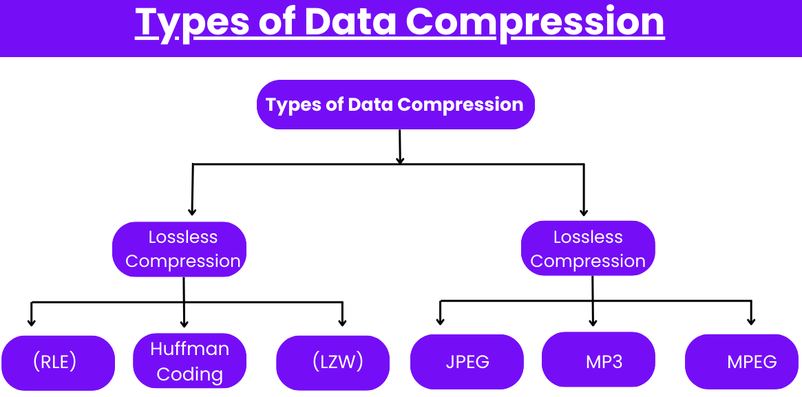

Compressies zijn technieken die gebruikt worden om grote digitale bestanden te verkleinen. Dit is belangrijk, omdat kleinere bestanden minder opslagruimte nodig hebben en sneller via internet kunnen worden verzonden. Dit maakt het delen en downloaden van bestanden makkelijker.
Lossless compressie: Bij deze methode blijft alle originele informatie behouden, zodat je het bestand later precies kunt terughalen. Dit is handig voor bestanden zoals tekst en afbeeldingen met veel belangrijke informatie. Voorbeelden zijn ZIP-bestanden, die meerdere bestanden samenvoegen en PNG-afbeeldingen.
Lossy compressie: Hierbij gaat een deel van de informatie verloren om de bestandsgrootte nog verder te verkleinen. Dit wordt vaak gebruikt voor audiobestanden en videobestanden, zoals MP3 en JPEG, waar sommige details minder belangrijk zijn. Hierdoor krijg je kleinere bestanden zonder dat de meeste mensen veel kwaliteitsverlies merken.
Kortom, compressies worden vaak gebruikt voor afbeeldingen, audio, video en documenten. Dit maakt het makkelijker om bestanden te delen via e-mail, op te slaan op apparaten met beperkte ruimte, en te streamen over het internet. Streamingdiensten zoals Netflix en Spotify gebruiken compressie om een goede kijkervaring en luisterervaring te geven.
